WindowsへのSDKのインストール
以前の版のSDKやランタイムをインストールしている場合、新しい版をインストールする前に、それらをアンインストールして下さい。Javaの開発/実行環境に対して十分な知識がある場合は、複数の版を共存させることを考えてもよいのですが、普通に使う分には、複数の版が入っていても混乱を招くだけですので。
古い版を削除するには、[コントロールパネル]-[プログラムの追加と削除]、もしくは、[コントロールパネル]-[アプリケーションの追加と削除] （Windwosの版によって名称が変わります） を使って下さい。まず、SDKを用意します。このCD-ROMに収録されているJ2SDK1.4.2_03「j2sdk-1_4_2_03-windows-i586-p.exe」を使うか、Sunのページ内から最新版をダウンロードして用意します。
本稿執筆時点では、ダウンロードページに、オフラインインストール（インターネットに接続されていない状態でもインストール可能）するためのインストーラと、オンラインインストール（インターネットに接続されていないとインストール出来ない）するためのインストーラの、2種類が用意されています。何かの都合で再インストールすることもあるでしょうから、オフラインインストール用インストーラのダウンロードをオススメします。ファイルサイズの大きい方がオフラインインストール用インストーラです。インストーラが用意できたら、ダブルクリックなどの操作でインストーラを実行します。WindowsNT/2000/XPにインストールする時には、ログオンしたユーザの権限によってインストールが行えない場合があります。アプリケーションをインストールできる権限を持ったユーザでログオンし、インストール作業を行うようにして下さい。
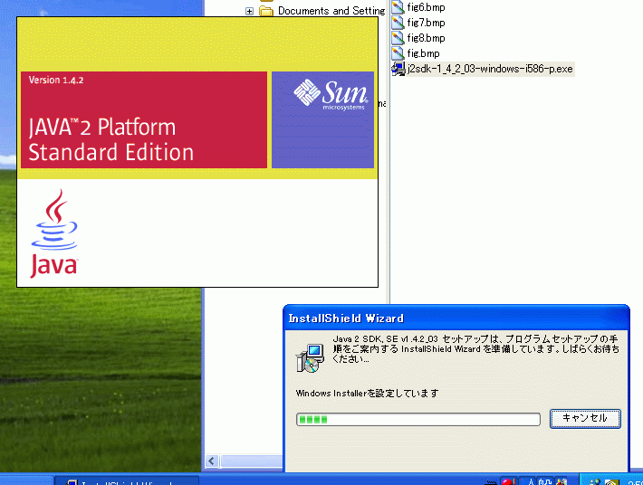
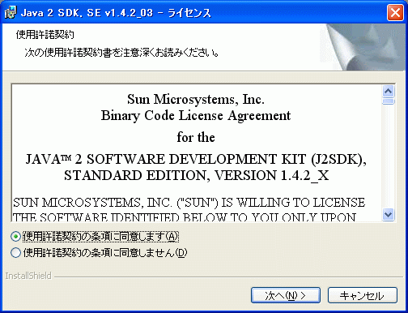
最初に、使用許諾契約の条項への同意を求められます。一般的に米国製ソフトウェアの使用許諾に関する文書は、原文の厳密性を失わないようにするため、英語以外の言語への翻訳を行い配布することを禁じています。ですので、この条項への同意は、皆さん自身の責任において行って下さい。
一般的な使用許諾とは、ソフトウェアが無保証であることと、提供者の著作権を尊重することへの同意を求めるものですので、あまり怖がらなくてもよいと思います。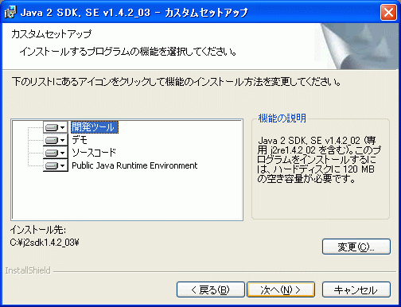
間違い探し(^^;※
次に、何をインストールするか、どこにインストールするかを聞かれますが、特にポリシーがなければ変更する必要はないでしょう。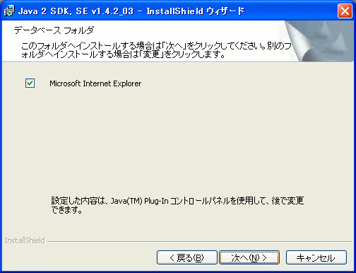
webブラウザ上でアプレットを実行する際に、インストールするJavaの実行環境を利用できるように、webブラウザとの関連付けを行います。最新版の実行環境でアプレットを実行出来るように、チェックを付けた状態で[次へ]進みます。
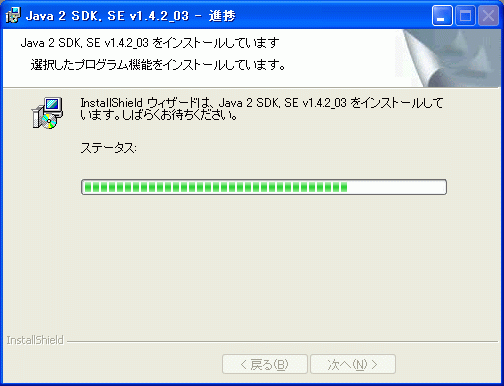
設定した状態に基づいて、SDKがインストールされます。
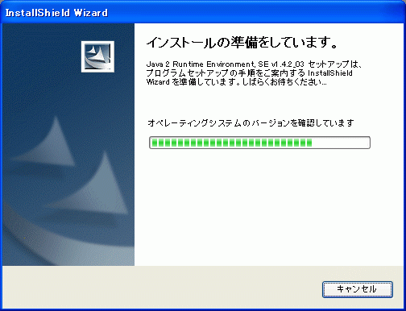
SDKのインストールの後、実行環境「Runtime Environment」がインストールされます。
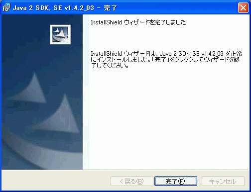
インストールが完了しました。Windowsの版によっては、再起動を求められるかも知れません。その場合は、再起動を行ってから、以降に進んで下さい。
日本語化された公式のインストールガイドも参考にしてみて下さい。
※間違い探しの答え：メッセージ中のJavaの版が、古いままになっている(^^;
SDKがインストールできたら、開発/実行環境を整えることにします。といっても、大したことはしません(^^;
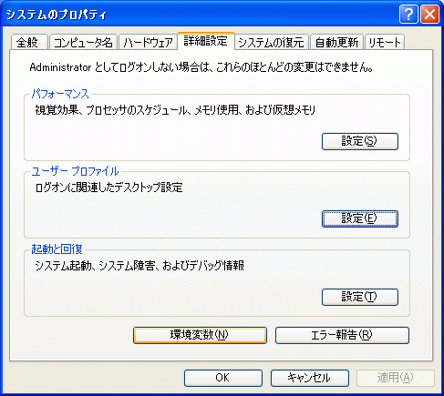
WindowsXPの場合、[コントロールパネル]-[システム]-[詳細設定]-[環境変数]を選びます。
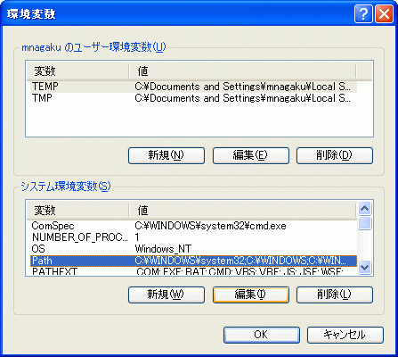
[システム環境変数]で、変数の中から「Path」を選択し、[編集]を押します。
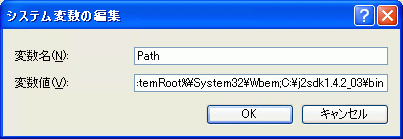
すると変数値を編集できるので、現在設定されている文字列の最後に「;C:\j2sdk1.4.2_03\bin」のように、セミコロン＋SDKをインストールしたディレクトリへのパス（インストール時に出てきたインストール先）＋「\bin」、を追加します。記述し終えたら、[OK]を押して、設定ウィンドウを閉じていって下さい。
この記述によって、SDKに含まれるプログラムにパスが通り、SDKに含まれるプログラムをコマンドプロンプトから利用できるようになります。
「パスが通る」ということが何を意味するのかは、ここでは述べません。分からない場合は、みなさん自身で調べてみて下さい。10年前までは、コンピュータを使う人が必ず知っていた知識です。設定後に [スタート]-[すべてのプログラム]-[アクセサリ]-[コマンドプロンプト] を実行し、コマンドラインから
> javac
と、Javaコンパイラを実行してみます。動作することが確認出来るでしょう。もし、動かない場合は、ここまでの作業手順を見直して下さい。
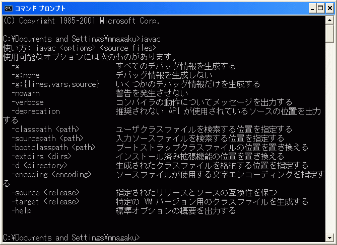
Windows2000の場合、環境変数の設定は、[コントロールパネル]-[システム]-[詳細]-[環境変数] から行えます。
コマンドプロンプトは、WindowsNT/2000/XPでの呼び名で、Windows98/Meでは「MS-DOSプロンプト」という名前になっています。2つは多少の違いはありますが、基本的に同じものです。これらをまとめて、俗に「DOS窓」と呼んでいます。
Windows98/Meでは、環境変数の設定を、コントロールパネルから行うことが出来ません。要は、DOS窓で、SDKにパスが通った状態に出来ればよいので、どうすればよいか、少し勉強して考えてみて下さい。
例えば、Javaのプログラミングのための作業フォルダ（ディレクトリ）にDOS窓へのショートカットを作成し、
javaenv.bat---------------------------------------
set path=%path%;C:\j2sdk1.4.2_03\bin
doskey
javaenv.bat---------------------------------------のような2行の内容のバッチファイルも、同じ場所に置きます。DOS窓へのショートカットのプロパティを開き、[プログラム]-[作業ディレクトリ]を空に、[プログラム]-[バッチファイル]に先ほどの「javaenv.bat」を指定します。また、[プログラム]-[メモリ]-[環境変数の初期サイズ]を1024程度に変更します。このプロパティの設定を行う際には、設定中のDOS窓が開いた状態だと、設定情報が反映されない場合があります。DOS窓が起動していない状態（最小化ではなく終了すること）で行って下さい。
こうして設定したDOS窓上からなら「パスが通った」状態となり、javacを動作させることが出来ます。もし、動かないようなら、環境変数が足りない旨のエラーメッセージが出ているかも知れません。[プログラム]-[メモリ]-[環境変数の初期サイズ]をもう少し増やして下さい。日本語化された公式のインストールガイドも参考にしてみて下さい。
CD-ROMに収められたJavaのソースコードを、簡単にコンパイルし直す方法を、Windowsを使っているアナタのためだけに用意してあります。
まず、作業フォルダ（ディレクトリ）内に、CD-ROMの内容をまるごとコピーするフォルダ（ディレクトリ）「cd_rom」を新規作成します。そこへCD-ROMの内容をまるごとコピーしたら、フォルダのプロパティで、属性を変更し、読み取り専用属性のチェックが付いていない状態にします。コピーした全てのファイルが自由に削除できる状態になったら、javacの動くDOS窓のコマンドラインから、cd_rom内にあるmakeall.batを実行します。すると、本文の各章に対応したc1からc8までの各フォルダ内に収められたソースファイルを全てコンパイルしてくれます。
各章毎に、関連するもののみコンパイルしたい場合は、そのフォルダにcdコマンドで移動し、make.batを実行します。
バッチファイルを実行するだけでなく、その中身をテキストエディタで開き、バッチファイルの書き方を覚えて下さい。そのためのオマケです。
本文内のアプレット実行例では、SDKに添付されている「appletviewer」というツールを使っています。appletviewerは、アプレットに対応したwebブラウザがなくても、アプレットを動作させることができます。appletviewerを使うには、先ほど準備したDOS窓のコマンドプロンプトから
> appletviewer race.html
のように、アプレットを埋め込んだhtmlファイルを引数として渡して下さい。jarファイルでも、クラス名でもなく、htmlファイルを指定する点に注意して下さい。詳細は、Javaの日本語ドキュメントを参照して下さい。
WIndows上で最も利用されているwebブラウザは、InternetExplorer（以下、IE）です。IEでアプレットを実行する時、SDKなどを導入した環境では、最新版の実行環境（以下、JVM）を利用できますが、導入していない一般的な環境では、どうなるのでしょう? WindowsXPのSP1と呼ばれる版より前のWindowsでは、Microsoft製のJVM、通称「MSVM」が組み込まれており、Java1.1.4相当の機能を利用したプログラムを実行できるようになっています。大人の理由から、MSVMの配布は終了し、近い将来にサポートも終了しますが、Javaの実行環境をユーザがインストールしていない多くのPC上で、唯一のJVMとして存在しています。
本書では、MSVMでも動作するプログラミングを行っています。そこで、IEでMSVMとSun製JVMを切り替える方法を紹介します。さまざまなアプレットが、何れでも動作するのかどうか、確認してみて下さい。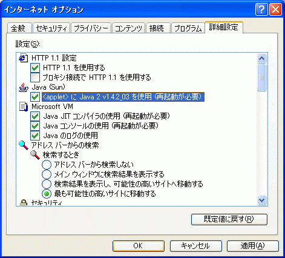
IE6SP1（本稿執筆時点でのIE最新版）の [ツール]-[インターネットオプション]-[詳細設定] を見ると、[Java（Sun）]に、Sun製JVMを使うかどうかを切り替えるチェックボックスがあります。このチェックを外すと、Sun製JVMに代わって、MSVMが実行環境となります。チェックの状態を変えたら、その次に新しく開かれるIEのウィンドウから、設定が有効になります。
なるべく多くの人が遊べるゲームにするためには、何れのJVMでも動くよう作る必要があります。
あと1つ必要なのが、Javaに関するマニュアルです。本稿執筆時点での最新版日本語ドキュメントは
http://java.sun.com/j2se/1.4.2/ja/download.html
からダウンロードできます。日本語版ドキュメントのインストール手順を参考に、自分の使い易い場所に置いて下さい。
日本語版ドキュメントには、クラスライブラリの詳細なマニュアルや、jar、javadoc、appletviewerなど開発に欠かせないツールの使い方などが載っています。Javaを使う上で疑問があったら、まず、これを見てみましょう。